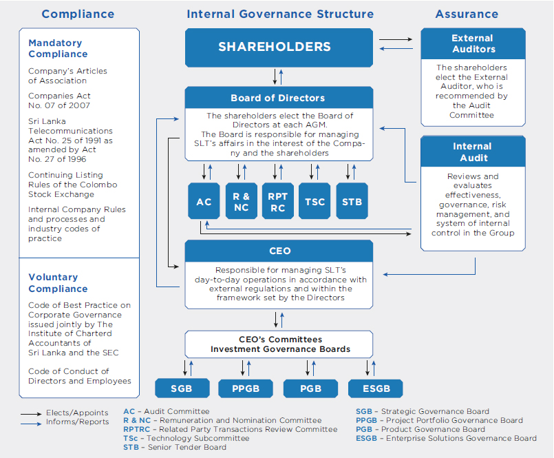

Stewardship and Governance
Corporate Governance


Strong corporate governance facilitates effective management and monitoring of operations of an organisations and helps to ensure that Directors fulfil their responsibilities towards their stakeholders – including shareholders, customers, employees, and the community. The Board of Directors of SLT has adopted guidelines that define fiduciary duties and expected standard of conduct. The Board has also adopted corporate governance guidelines that reflect the Board’s current governance practices and the Board’s commitment to ensuring its effectiveness.
SLT is in full compliance with the following frameworks of legislation, codes and voluntary practices as part of its corporate governance guidelines adopted by the Board of Directors;
- Internal Company rules and processes and industry codes of practice and corporate ethics
- Articles of Association (“AoA”) of the Company
- Legislation, particularly the Companies Act No. 07 of 2007 and the Sri Lanka Telecommunications Act No. 25 of 1991 as amended by Act No. 27 of 1996
- Listing Rules of the Colombo Stock Exchange
- Code of Ethics for Directors and employees
The illustration below shows the formal corporate governance structure.

The Board of Directors
Composition of the Board
The Board of Directors during the year 2019 comprised eight Non-Executive Directors; a majority of whom are independent as the Board deems appropriate to function efficiently as a body, subject to the Company’s Articles of Association.
Their biographies on pages 78 and 80 of the annual report demonstrate a breadth of experience, understanding of business and sufficient calibre to provide independent judgement on issues of strategy, performance, resources, and standards of conduct which is vital to the Group.
Selection of Directors
In terms of the Articles of Association of SLT, the Board of Directors has the authority to fill vacancies in the Board and appoint additional Directors subject to their re-election at the next Annual General Meeting and to nominate candidates for election by the shareholders. Accordingly, two major shareholders, namely the Government of Sri Lanka acting through the Secretary to the Treasury, and Global Telecommunication Holdings N.V. recommend five and four Directors to the Board respectively. The Board appoints them to the Board, filling casual vacancies as provided by the AoA after deliberation of their experience, understanding of business and financial issues, ability to exercise sound judgement, diversity, leadership, and achievements and experience in matters affecting business and industry.
The role of the Board
Providing strategic leadership
The Board is the highest decision-making body of the Company who provides strategic leadership to the Management. The Company’s business is managed under the direction of the Board of Directors. The Board delegates the Chief Executive Officer (CEO) of the Company, and through that individual to other Senior Management, the authority and responsibility for managing the Company’s business. The Board’s role is to oversee the management and governance of the Company and to monitor Senior Management’s performance.
The Board is accountable to shareholders for ensuring that SLT is appropriately managed and achieves the strategic objectives it sets.
Among the Board’s core responsibilities are to:
- Select, monitor, evaluate and compensate Senior Management.
- Assure that management succession planning is adequate.
- Review and approve significant corporate actions.
- Review and monitor implementation of Management’s strategic plans.
- Review and approve the Company’s annual business plan, budgets and operating plan
- Monitor corporate performance and evaluate results compared to the strategic plans and other long-range goals.
- Review Company’s financial controls and reporting systems.
- Review and approve the Company’s financial statements and financial reporting.
- Review the Company’s legal compliance programmes and procedures
- Oversee the Company’s management of enterprise risk.
The following processes are in place in order to provide timely and accurate information to Directors to perform their responsibilities;
- All Directors receive accurate, relevant, timely, clear and balanced information.
- The Company Secretary act as the point of contact for the flow of information between Committees, the Board of Directors, and other key managers
- The CEO along with the respective Chief Officers and the Heads of Divisions presents their submissions to the Board and provides the necessary clarifications requested by the Board.
- In addition, all Board Papers are made available in electronic format, in line with the Group’s sustainability initiatives.
The attendance of individual Directors at Board meetings and Committee meetings during the year is set out in the table below.
| Board member | Status | Board | Audit Committee | Remuneration and Nomination Committee | Technology Subcommittee | Senior Tender Board | Related Party Transactions Review Committee |
| Mr Sirisena Kumarasinghe – Chairman (Resigned w.e.f. 6 January 2020) | INED | 7/7 | – | 6/6 | – | – | – |
| Mr Chan Chee Beng | NED | 7/7 | – | 6/6 | – | – | – |
| Mr Lawrence Michael Paratz | INED | 7/7 | – | 6/6 | 7/7 | 7/7 | – |
| Ms Lai Choon Foong | NED | 7/7 | 5/5 | – | – | 7/7 | 4/4 |
| Ms Nilanthi Pieris (Resigned w.e.f. 3 December 2019) | INED | 7/7 | 5/5 | – | – | 6/6 | 4/4 |
| Mr W K H Wegapitiya (Resigned w.e.f. 17 November 2019) | INED | 4/4 | – | – | – | – | |
| Mr Pradeep Kumara (Resigned w. e.f. 17 January 2020) | 4/7 | – | |||||
| Mr Kanishka Senanayake (Resigned w.e.f. 6 January 2020) | INED | 3/7 | 3/5 | 2/4 |
Delegation to Board Subcommittees
SLT has in place a number of mandatory and voluntary Board Subcommittees to fulfil regulatory requirements and for better governance of its activities. These Committees comprise Directors who can bring their expertise and experience to the assigned committees, and the duties are set out in formal Terms of Reference.
The Committees meet regularly to consider and discuss matters falling within their authority and accountability specified in the Terms of Reference. Their observations and recommendations are regularly reported to the Board.
Other specific responsibilities are delegated to Board committees which operate within clearly defined terms of reference. The Subcommittee Chairmen and members meet the Corporate Executive Team members as and when required to discuss and develop proposals collectively in relation to the Group's strategy and key operational issues. Details of the responsibilities and operations of the subcommittees are given on pages 92 and 93.
| Committee | Composition and role | Meeting frequency |
| Audit Committee | The Audit Committee (“AC”) comprise Non-Executive Directors, majority of whom are independent. Ms Lai Choon Foong, is a member of recognized accounting bodies. The members of the Committee are; Mr Ananda Seneviratne, Chairman (Appointed w.e.f. 7 February 2020) Ms Lai Choon Foong Mr Mohan Weerakoon, PC (Appointed w.e.f. 7 February 2020) Mr Kanishka Senanayake, former Chairman, and Ms Nilanthi Pieris ceased to be members of the AC. w.e.f. 6 January 2020 and 3 December 2019 respectively The Chief Executive Officer (“CEO”), the Group Chief Financial Officer (“GCFO”) and the Group Chief Internal Auditor (“GCIA”) attend the meetings by invitation. The GCIA is a direct report to the AC. The AC assists the Board in its oversight and monitoring of financial reporting, Group’s risks management, revenue assurance functions, and internal controls. The AC report on pages 98 to 101 of the annual report sets out in more detail the Committee’s policies, practices, and areas of focus. | A minimum of four meetings per annum and at such other times as the Chairman of the Committee shall require. |
| Remuneration and Nomination Committee | The Remuneration and Nomination Committee (“R&NC”) comprises Non-Executive Directors, majority of whom are independent. The members of the Committee are; Mr Chan Chee Beng – Chairman Mr Lawrence Paratz Mr Rohan Fernando (Appointed w.e.f. 7 February 2020) Mr Kumarasinghe Sirisena ceased to be a member of the AC w.e.f. 6 January 2020. The activities of the R&NC include nomination, selection, and appointment of Non-Executive Directors, CEO and key senior officers, succession planning for the CEO and Senior Management, and review of Board composition, particularly in relation to the diversity of background, skills, and experience. It also provides support and guidance with regard to the Group’s policy for determining the fees for Non-Executive Directors and remuneration of CEO, CEOs of subsidiary companies, and Senior Management. The CEO attends meetings by invitation, as and when required by the Committee. | Once a year and at such other times as the Chairman of the Committee shall require |
| Related Party Transactions Review Committee | The Related Party Transactions Review Committee (“RPT – RC”) comprises Non-Executive Directors of whom two Directors are independent. The Chairman of the Committee is an Independent Director. The members of the Committee are; Mr Mohan Weerakoon, PC – Chairman (Appointed w.e.f. 7 February 2020) Ms Lai Choon Foong Mr Ananda Seneviratne (Appointed w.e.f. 7 February 2020) Ms Nilanthi Pieris, former Chairperson and Mr Kanishka Senanayake, ceased to be members of the Committee with effect from 3 December 2019 and 6 January 2020 respectively. The objective of the subcommittee is to ensure that the interest of shareholders are taken into account when entering into related party transactions and to enhance corporate transparency and promote fair transactions between SLT, its subsidiaries, and other related parties. The related party relationship with its subsidiaries is disclosed in the Notes to the Financial Statements. However, the Board believes that those transactions are exempted in accordance with the exceptions specified in the Code of Best Practices on Related Party Transactions issued by the CSE. | A minimum of four meetings per year. |
| Technology Subcommittee | The Technology subcommittee (“TSC”) comprises the following Directors. Mr Lawrence Paratz – Chairman Mr Lalith Seneviratne (Appointed w.e.f. 7 February 2020) Mr W K H Wegapitiya ceased to be a member w.e.f. 17 November 2019 The TSC comprises Directors with technical expertise who are assigned the task of studying available technology and providing a platform for engaging in intense technical discussions and looking at roadmaps with a long-term perspective. CEO and Senior Management members of SLT and Mobitel attend meetings of the TSC as permanent members in order to maintain Group synergies when major decisions are made. If required, CEOs of subsidiary companies are also invited to attend meetings. Therefore, TSC primarily focuses on best strategies to increase organisational efficiencies; support the advancement of professional staff capabilities, and develop a flexible delivery system to effectively respond to new technological advances and information. It is also the responsibility of the Committee to review the existence and appropriateness of plans and processes, planned and achieved network performance and methods of assessment, and the Company’s technology, people and skill plans and their implementation. | As and when required |
| Senior Tender Board | The Senior Tender Board (“STB”) comprises Non–Executive Directors and Executive Directors. The members of the Committee are: Ms Lai Choon Foong – Chairperson Mr Lawrence Paratz Mr Lalith Seneviratne (Appointed w.e.f. 7 February 2020) Mr Mohan Weerakoon, PC (Appointed w.e.f. 7 February 2020) Mr W K H Wegapitiya and Ms Nilanthi Pieris ceased to be members of the STB with effect from 17 November 2019 and 3 December 2019 respectively. The CEO and the GCFO are appointed to the Committee by the Board to review the Group’s procurement needs. The procurement function involves a standard procurement process approved by the Board where, all common procurement processes are consolidated at the Group level for SLT and its subsidiaries. Therefore in order to increase efficiencies and reduce risk, the Board has delegated the approval limits for procurement as follows: Board of Directors – Value exceeding LKR 75 Mn. Senior Tender Board – Value between LKR 25 Mn. and LKR 50 Mn. Junior Tender Board – value less than LKR 25 Mn. | Prior to every Board meeting |
Indemnities to Directors
In accordance with the AoA of the Company, Directors are granted an indemnity from the Company to the extent permitted by law in respect to liabilities incurred as a result of the performance of their duties in their capacity as Directors to the Company. The indemnity would not provide any coverage to the extent the Director is proven to have acted fraudulently or dishonestly. The Company has maintained Directors’ and Officers’ Liability insurance cover throughout the year.
Role of the Chairman and Chief Executive Officer
Distinction between strategic and operational matters is clearly established in terms of division of responsibility of the Chairman and the Chief Executive. The Chairman of the Board of SLT is a non-executive appointment and focusses on strategic issues and monitoring the business and executive team. He ensures Board procedures are followed and all Board members effectively participate during meetings.
The CEO is responsible for day-to-day management of the business and leadership of the executive team, and execution of the Group’s strategic and operating plans. The Chairman meets the CEO regularly to discuss any issues pertaining to the Company’s performance, operational matters, and human resources.
CEO Performance Evaluation
At the beginning of each year, the CEO presents his performance objectives for the upcoming year to the Board of Directors for their approval. At the end of the year, the Board meet to discuss the CEO’s performance for the current year against his performance objectives. The Board of Directors and the CEO then meet to review the CEO’s performance evaluation and compensation.
The Company Secretary
The Company Secretary is responsible to the Board and is available to individual Directors in respect of Board procedures.
The Company Secretary supports the Chairman in delivery of the agenda, in particular the planning of the annual cycle of Board and Board committee meetings, and ensures that information is made available to Board members in a timely fashion. He also advises the Directors on Board procedures and corporate governance matters.
He is Secretary to all the Board subcommittees as well. The Company Secretary is an Attorney-at-Law and an Associate member of The Chartered Governance Institute, United Kingdom.
The appointment or removal of the Company Secretary is a matter for the Board as a whole.
Internal control and risk management
Internal control framework currently in place is set by the risk management framework, financial control, internal audit and supporting policies. The aim of SLT’s internal control framework is to assure that operations are effective and well aligned with the strategic goals. The internal control framework is intended to ensure correct, reliable complete and timely financial reporting and management information. The framework endorses ethical values, good corporate governance and risk management practices.
SLT uses systematic risk management to develop the efficiency and control of business operations as well as their profitability and continuity.
Strategic Governance Boards (“SGB”)
Strategic Governance Board comprising the CEO and the Chief Officers of each functional area are given the responsibility of studying the requirements of cross functional areas and introducing solutions in a transparent manner.
The six cross functional governance boards previously introduced have reduced to four in an attempt to improve capital investment decisions, enhance supply chain management and better utilisation of Group resources.
Corporate Ethics
SLT has adopted a Code of Ethics for Directors and a more detailed Code of Conduct for the employees, which extended to third parties who deal with the Company. The Code sets out principles to guide employees in carrying out their duties and responsibilities to the highest standards of personal and corporate integrity when dealing with SLT, its competitors, customers, suppliers, and the community. Processes and standards in the Code are intended to enhance investor confidence and rapport, and to ensure that decision-making is properly carried out in the best interests of the Group. The Code covers areas such as equal opportunity employment practices, workplace health and safety, conduct in the workplace, business conduct, protection of SLT’s assets, proprietary information and intellectual property, data protection, security, resilience, conflict of interest, and non-solicitation of customers and employees. The Code is posted on SLT’s internal website. Policies and standards are clearly stipulated to guide employees in carrying out their daily tasks.
Material Contracts
There are no material contracts entered into by SLT or any of its subsidiaries that involve the interests of the CEO, any Director, or the controlling shareholders, Secretary to the Treasury and the Global Telecommunications Holdings, N.V.
Remuneration of Non-Executive Directors
The R & NC reviews and proposes the Non-Executive Directors’ fees based on experience and skills of the Directors and the complexity of the Group’s business and operations, for the approval of the Board.
The fees for Non-Executive Directors other than the Chairman comprised a fee for attendance at Board and Board’s subcommittee meetings. The cost of travelling and accommodation incurred by the overseas Directors who were required to travel out of their country to attend Board and subcommittee meetings is reimbursed.
The aggregate Directors’ fees paid to Non-Executive Directors for the financial year ended 31 December 2019 was LKR 18.0 Mn.
Mr W K H Wegapitiya, who was appointed to the Board in December 2015 has declined to accept a Director fee and offered his monthly Director fee to a charitable organisation.
Remuneration of Senior Management
The remuneration framework and policy is designed to support implementation of the Group’s strategy and enhance shareholder value.
The following are the principles for remuneration to Senior Management:
- Set and link appropriate corporate and individual performance metrics based on the medium and long-term targets to the remuneration for evaluation of performance to support business strategies
- Offer competitive packages to attract and retain highly experienced and talented individuals
SLT’s CEO is the head of management and is, therefore, remunerated as part of Senior Management. The R & NC recommends the salary package of the CEO to be commensurate with his qualifications and experience for the approval of the Board. The CEO’s performance is assessed against the key performance indicators agreed upon at the beginning of each year and is compensated accordingly.
Constructive use of the Annual General Meeting
The Board seeks to use the Annual General Meeting to communicate with investors, and all shareholders are encouraged to participate. Chairpersons of subcommittees will be available at the AGM to answer any questions from shareholders.
Major transactions
The Board of Directors, as required by the Companies Act, discloses to shareholders all proposed corporate transactions detailing all facts associated with such transactions that are of material value to SLT. There were no major transactions entered into by SLT for the year 2019.
Related party transactions
The Board of Directors has applied rules issued by the CSE on related party transactions throughout its decision-making process to avoid any conflicts of interest that may occur. The Board has recognised the importance of a Related Party Transactions Review Committee under the Board of Directors to enhance corporate transparency and promote fair transactions between SLT and its subsidiaries. Accordingly, a RPT- RC was formed comprising three Non-Executive Directors with the objective of ensuring that the interests of shareholders are taken into account when entering into RPTs.
The Company has a related party relationship with its subsidiaries as disclosed in Note 32 of the Notes to the Financial Statements. However, the Board believes those transactions are exempted in accordance with exceptions specified in the Code of Best Practices on Related Party Transactions issued by the SEC. All these are recurrent transactions and are in the ordinary course of business of the Company.
Statement of Compliance
SLT is fully compliant with the requirements stipulated in Section 7.10 on “Corporate Governance” of the Continuing Listing Requirements of the Colombo Stock Exchange issued in 2010 and subsequent amendments/guidelines thereto. See the tables on pages 95 to 99 for the rules on “Corporate Governance Principles” and the degree of compliance to the said rules.
In addition, the Board of Directors to the best of their knowledge and belief is satisfied that all statutory payments due to the Government, other regulatory bodies and those payments related to employees of SLT, have been made in a timely manner.
| CSE Rule No. | CSE Rule | Compliance Status | SLT Action |
| 7.10. a,b,c | Compliance | ||
| Compliance with Corporate Governance Rules | SLT is in compliance with the Corporate Governance Rules | ||
| 7.10.1 | Non-Executive Directors (“NED”) | ||
| (a), (b), (c) | Two members or 1/3 of the Board, whichever is higher, should be NEDs. | As at 31 December 2019, all Directors are Non-Executive Directors | |
| 7.10.2 | Independent Directors (“ID”) | ||
| (a) | Two or 1/3 of NEDs, whichever is higher, should be independent | During the year 2019, 5 out of the 8 NEDs are Independent | |
| (b) | Each NED should submit a declaration annually of his/her independence or non- independence | All NEDs have submitted signed declaration confirming their independence/ non-independence | |
| 7.10.3 | Disclosures relating to Directors | ||
| (a) (b) | The Board shall annually determine the independence or otherwise of the NEDs, Names of the IDs should be disclosed in the Annual Report | The Board annually determines as to the independence or non-independence of each NED based on the declaration submitted by them and the names of the independent directors are set out in the Annual Report. | |
| (c ) | A brief résumé of each Director should be included in the Annual Report including the Director’s experience | A brief description of each Director is given in the Board of Directors section of the Annual Report | |
| (d) | Provide a brief résumé of newly appointed Directors to CSE | Detailed résumés of any Director appointed during the year are submitted to the CSE. | |
| 7.10.4 | Determination of Independence | ||
| (a-h) | Requirements for meeting the criteria to be an Independent Director | The Independence of the Board of Directors has been determined in accordance with the requirements of the CSE Listing Rules. Accordingly, 5 NEDs are considered Independent during 2019. Mr Chan Chee Beng, Director of Global Telecommunications Holdings N.V. (“GTH”) which holds 44.98% stake, Ms Lai Choon Foong, who is an employee of a related company of GTH and Mr Pradeep Kumara, employee of the Ministry of Finance which holds 49.5% stake in SLT through the Secretary to the Treasury are considered non-independent NED's. Mr Lawrence Parataz has served on the Board continually from 2010. The Board believes that the independence of Mr Paratz is not compromised by him serving on the Board continually for a period exceeding nine years from his first appointment. | |
| 7.10.5 | Remuneration Committee (“RC”) | ||
| Composition | |||
| (a) | The Committee shall comprise a minimum of two IDs or of NEDs, a majority of whom shall be independent One NEDs shall be appointed as Chairman of the Committee by the Board of Directors | RC comprises three NEDs out of whom two are Independent. Chairman of the Committee is a NED. | |
| (b) | Functions | ||
| The RC shall recommend the remuneration of the Chief Executive Officer (CEO) and EDs | The Board determines the recommendation made by the RC in determining the remuneration of the CEO. Fees for non-executive Directors other than the Chairman comprised a fee for attendance at Board and Board’s subcommittee meetings. The Chairman was paid with a monthly fee. | ||
| (c) | Disclosure in the Annual Report | ||
| Names of Directors comprising the RC | Refer Board Subcommittees under Corporate Governance | ||
| Statement of Remuneration Policy | Refer Board Subcommittees under Corporate Governance | ||
| Aggregated remuneration paid to EDs and NEDs | Refer Board Subcommittees under Corporate Governance and Note 7 to the Financial Statements | ||
| 7.10.6 | Audit Committee (“AC”) | ||
| (a) | Composition | ||
| The Committee shall comprise a minimum of two IDs or of NEDs, a majority of whom shall be independent One NED shall be appointed as the Chairman of the Committee CEO and Chief Financial Officer (CFO) should attend AC meetings Chairman of the AC or one member should be a member of a professional accounting body | During 2019, the AC comprised three NEDs out of whom two NEDs are considered independent The Chairman of the Committee was an Independent Director. The CEO, GCFO, GCIA and the External Auditors attended the Meetings by invitation Ms Lai Choon Foong, a member of the AC is a member of professional accounting bodies | ||
| (b) | Functions | ||
| Overseeing of the preparation, presentation and adequacy of disclosures in the Financial Statements in accordance with Sri Lanka Accounting Standards | The AC assists the Board in fulfilling its oversight responsibilities for the integrity of the Financial Statements of the Company and the Group | ||
| Overseeing of the compliance with financial reporting requirements, information requirements of the Companies Act and other relevant financial reporting related regulations and requirements | The AC has the overall responsibility for overseeing the preparation of Financial Statements in accordance with the laws and regulations of the country and also recommending to the Board, on the adoption of best accounting policies | ||
| Overseeing of the processes to ensure that the internal controls and risk management are adequate to meet the requirements of the Sri Lanka Auditing Standards | The AC assesses the effectiveness of internal control and risk management | ||
| Assessment of the independence and performance of the External Auditors | The AC assesses the External Auditors' performance, qualifications and independence | ||
| Make recommendations to the Board pertaining to appointment, reappointment and removal of External Auditors, and approve the remuneration and terms of engagement of the External Auditor | The Committee is responsible for appointment, reappointment and removal of External Auditors and also the approval of the remuneration and terms of engagement | ||
| (c) | Disclosure in the Annual Report | ||
| Names of Directors comprising the AC | Refer Board Subcommittees under Corporate Governance | ||
| The AC shall make a determination of the independence of the Auditors and disclose the basis for such determination | Refer the Report of the AC in the Annual Report | ||
| Aggregated remuneration paid to EDs and NEDs | Refer Board Subcommittees under Corporate Governance and Note 7 in the Financial Statements |